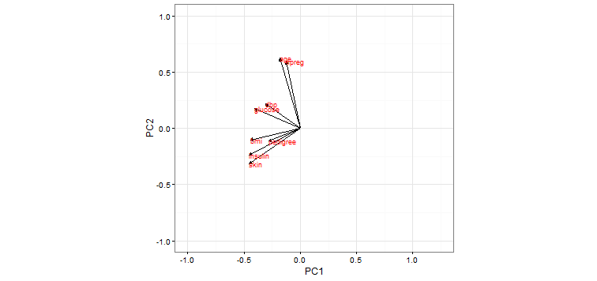

Studies have shown that Pima women have a much higher incidence of Type II Diabetes than the general
population. Since the 1960s, NIH researchers have periodically asked Pima women to undergo various
medical tests in order to assess possible diabetes risk factors. Consequently, data on Pima women has
proven useful for predicting how likely an individual is to develop diabetes. [Source: J. W. Smith, J. E.
Everhart, W. C. Dickson, W. C. Knowler, and R. S. Johannes (1988)
This project aimed to predict incidence of diabetes as a function of the predictors:
- + **npreg**: number of times pregnant
- + **glucose**: plasma glucose concentration at 2 hours in an oral glucose tolerance test (units: mg/dL)
- + **dpb**: diastolic blood pressure (units: mm Hg)
- + **skin**: triceps skin-fold thickness (units: mm)
- + **insulin**: 2-hour serum insulin level (units: $\mu$U/mL)
- + **bmi**: Body Mass Index
- + **age**: age in years
- + **diabetic**: whether or not the individual has diabetes
Techniques used included constructing GLM, building ROC curves, and running a PCA analsysis along with
K-Means clustering.